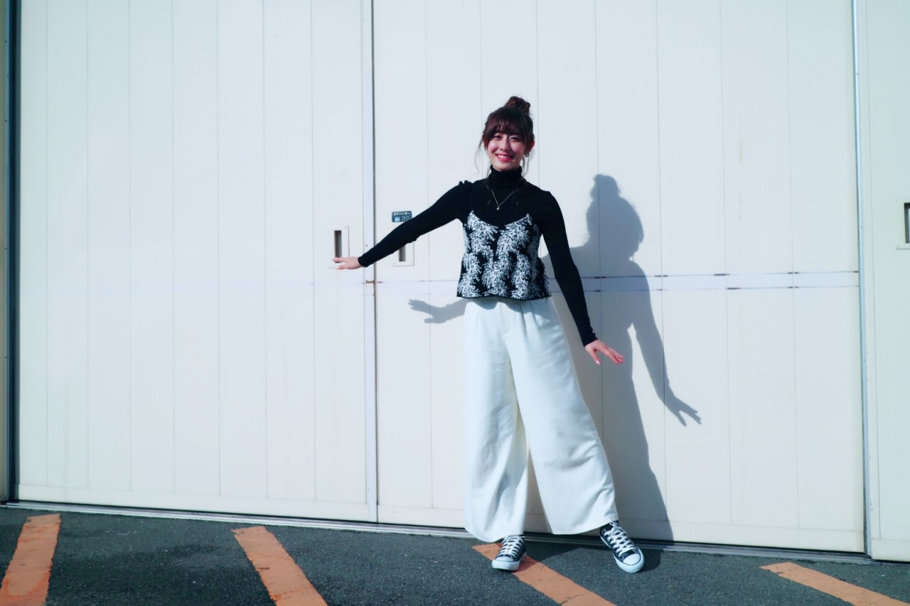
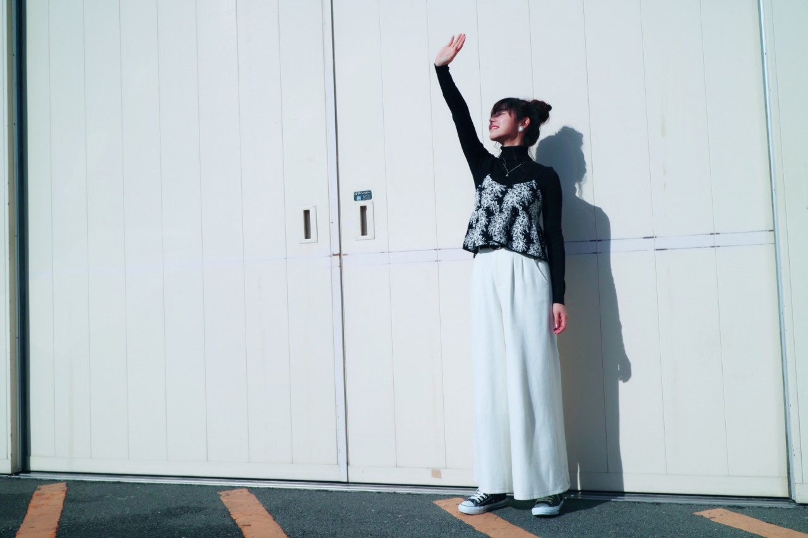
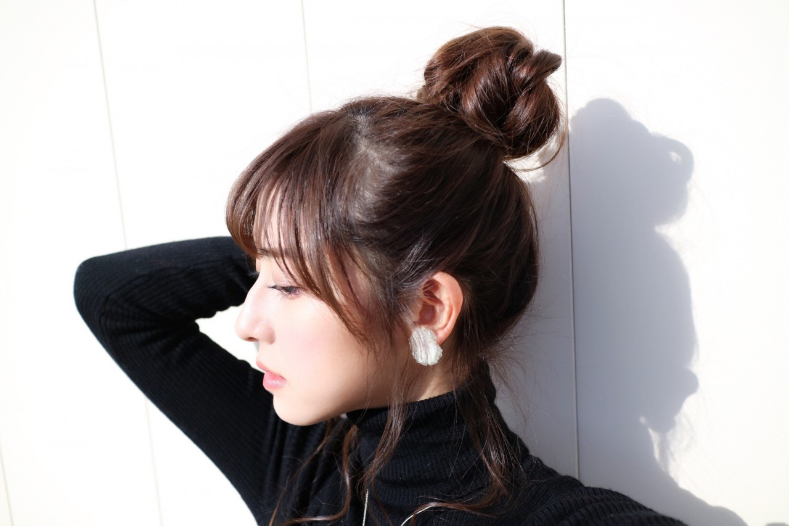
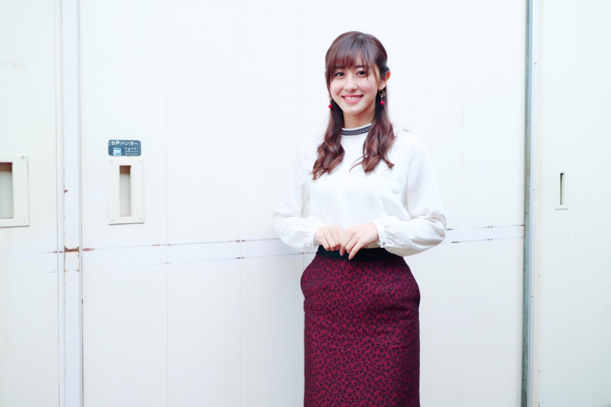

| 2017/01 15 Sun | 斎藤ちはる 個別握手会 |
ちはるーむへようこそ。
今日は京都で個別握手会。
今年初個別でした◎
昨日に引き続き悪天候の中
来てくださった皆さん
ありがとうございました...！
電車や新幹線が遅れてるっていう話や
待機時間が長く外にいた方も
多かったという話も聞いて
皆さんの体調が本当に心配です(> <)
大丈夫ですか(> <)？
でも久しぶりに皆さんとゆっくり
お話が出来て私は凄い楽しかったです！
私のためにわざわざ来て下さる皆さんに
感謝するばかりです。
心の支えになっています。
本当にありがとうございます( ¨̮ )！
そして年始にもなると、これからは
就活や受験や試験などで来れなくなるって
いう方も多くて、寂しい気持ちになりました...
仕方がない事だけど会えなくなるのは悲しい。
辛くなった時に私との握手の事だったり
乃木坂の事を思い出してくれたら
私はそれだけで嬉しいな。
でも落ち着いて時間が作れるようになった時
また会いに来てくれたらもっと嬉しい。
ずっと応援しているからね！
ずっと待ってるからね！
#chihaOOTD
3部


turtleneck : uniqlo
knit camisole : ROSE BUD
widepants : Another Edition
sneaker : CONVERSE
earring : KAKERA
タートルネック×ニットキャミ
の組み合わせがどうしても着たくて。
今日は白のワイドパンツにお団子で
ラフなコーディネートにしました！

お団子は後れ毛もありでこちらもラフに。
全体を巻いてからポニーテールにして
そこからざっくり三つ編みにしてから
お団子にするとこんな風な
ラフなお団子が出来ます◎
女の子達試してみてね♡
4部

tops : ROSE BUD
skirt : BARNEYS NEW YORK
earring : iki
乃木坂工事中の私服チェックの回で
私が着ていたお母さんと共用の服を
そのまんま着て来ちゃいました◎
3部とは打って変わって
成人を迎えたのでお姉さんぽく。
寒くて顔が強張っちゃった表情。
さり気なく雪降ってたもん...笑
イヤリングを沢山褒められて
凄い嬉しかった♡
またしっかり紹介します！
------------------------------------------♡
♬ ChihaMusic
「ルーキー」サカナクションさん
どの曲も中毒になるサカナクションさん。
イントロドンをしてもすぐに
サカナクションさんって分かるくらいに
個性的でその個性が大好き。
音と音の重なりがとても良くて
例えオフボーカルで聞いたとしても
楽しめる曲だと思います。
"行かないで 見渡して 羽ばたいて
口ずさんで いつか
言わないで 思い出して 羽ばたいて
口ずさんで いつか"
このサビが好き。
このサビが始まる前の音も好き。
実はもう学校のテストが始まっているので
今とても焦っています...！
明日もあるよ...！
ほとんど何も出来てないよ...！
やばいよやばいよ( ˟_˟ )
単位〜単位〜
大学生の皆さん一緒に頑張ろうね(> <)
おやすみ
斎藤ちはる